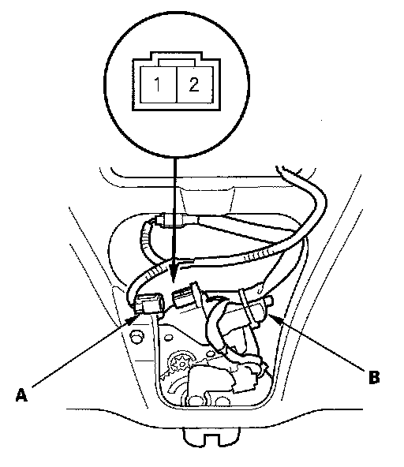

Tailgate Release Actuator Test
Tailgate Release Actuator TestWithout Power Tailgate
1. Remove the tailgate trim panel.

2. Disconnect the 2P connector (A) from the tailgate release actuator (B).
3. Check the actuator by connecting battery power to the No. 2 terminal and ground to the No. 1 terminal. To prevent damage to the actuator, apply battery voltage only momentarily.
The actuator should work.
4. If the actuator does not work, replace the tailgate latch assembly.